Energy Compass — states and strategies guide
English · Polski
This guide explains what Energy Compass does, every state its entities can report and the conditions that produce each state, and the six dispatch strategies. It describes release 0.1.25. The mathematical contract behind each rule lives in model and limitations; installation and dashboards are in the installation guide.
Energy Compass is advisory. It computes a plan and publishes it as Home Assistant entities. It never writes inverter registers and sends no messages by itself; controllers and notification blueprints decide whether to act on the plan. The repository ships one such controller, for Deye inverters through Solarman: see Deye inverter controller.
Contents
- How it works
- Entity overview
- Optimizer status — calculation lifecycle
- Alert and forecast validity
- Operating modes — the planned battery state
- Consumption levels — BOOST, CHEAP, NORMAL, LIMIT
- Windows and flexible energy depth
- Dispatch strategies
- Automatic strategy switching
- Window notifications
- Deye inverter controller (Solarman)
- Reason code reference
How it works
Each calculation proceeds as follows:
- Snapshot and validate inputs. Prices, PV forecast, load forecast (from recorder history), battery SOC and daily counters are read and checked for freshness, units and plausibility.
- Build the problem. Native tariff slots (typically 15 min) over the planning horizon (24 h by default), hardware limits, SOC bounds, the carried operating-mode commitment and the active strategy bundle.
- Solve the base plan. A mixed-integer linear program minimizes cost (plus strategy weights) under energy balance, battery, grid, mode-duration and export/charge-policy constraints. Only a proven optimum is published.
- Probe consumption. For each display interval, the solver is rerun with 1 kWh of extra load; the cost difference is the incremental cost of one more kWh, which is classified into a consumption level.
- Profile flexible loads. Separate solves for 3, 5, 10, 15 and 20 kWh blocks measure how much flexible energy can be scheduled before the price degrades.
- Publish. One coherent generation updates all entities; unchanged entities are not rewritten.
Recalculation cadence
- Periodic:
refresh_minutes(default 15, max 60) aligned to the wall clock. - Input-driven: at most once per
minimum_replan_seconds(default 900 s,0disables) while a valid plan is retained; SOC counts as changed only after movingsoc_trigger_percent(default 5 %) from the value that started the last calculation. - Boundaries: at each native settlement boundary the existing plan advances (consumed rows are dropped, mode clocks tick) without a solve.
- Plan lifetime: a new plan is valid until
generated_at + 2 × refresh_minutes, capped by forecast coverage.
Entity overview
<name> is the integration entry's title.
| Entity | EN name | PL name | State |
|---|---|---|---|
sensor.<name>_consumption_compass |
Consumption compass | Kompas zużycia | BOOST / CHEAP / NORMAL / LIMIT |
sensor.<name>_consumption_cost |
Consumption cost | Koszt zużycia | currency/kWh of one more kWh now |
sensor.<name>_flexible_energy_depth |
Flexible energy depth | Głębokość elastycznego zużycia | kWh |
sensor.<name>_next_change |
Next change | Następna zmiana | timestamp of next level change |
sensor.<name>_next_boost_start |
Next boost start | Początek zwiększonego zużycia | timestamp |
sensor.<name>_next_cheap_start |
Next cheap start | Początek taniego okresu | timestamp |
sensor.<name>_next_limit_start |
Next limit start | Początek ograniczenia | timestamp |
sensor.<name>_energy_compass |
Energy compass | Kompas energii | one of six operating modes |
sensor.<name>_plan |
Plan | Plan | generation timestamp + full plan attributes |
sensor.<name>_expected_net_cost |
Expected net cost | Przewidywany koszt netto | currency over the horizon |
sensor.<name>_expected_wear_cost |
Expected wear cost | Przewidywany koszt zużycia baterii | currency over the horizon |
sensor.<name>_optimizer_status |
Optimizer status | Stan optymalizatora | calculation status (diagnostic) |
sensor.<name>_battery_balance |
Battery balance | Balansowanie baterii | ok / eligible / scheduled / holding / overdue (diagnostic) |
binary_sensor.<name>_forecast_valid |
Forecast valid | Poprawna prognoza | on / off |
binary_sensor.<name>_alert |
Alert | Alert | on / off (diagnostic, problem) |
select.<name>_strategy |
Strategy | Strategia | one of six strategies |
Cost sensors can be disabled with Presentation → Expose costs, window timestamps with
Expose windows, and flexible depth with Consumption outlook → Enable flexible energy depth.
Battery balance is disabled by default and enabled with the LFP balance setting; its
attributes carry last_completed, next_due, days_overdue, planned_start, planned_end,
planned_mode, hold_progress_minutes, hold_required_minutes and threshold_percent.
Availability rule
Optimizer status — calculation lifecycle
| State | EN / PL label | When it occurs | What stays published |
|---|---|---|---|
ready |
Ready / Gotowy | The last calculation produced a proven optimal base plan and it was published. | The new plan. ready does not guarantee complete reference coverage — check reason. |
calculating |
Calculating / Obliczanie | A calculation is queued or running. reason says why: inputs_changed, interval_boundary (periodic refresh due), inputs_recovered, calculating (worker started), soc_rebase_pending (upward SOC jump awaiting confirmation). |
The previous plan while it covers now, with refreshing: true. An existing alert stays on. |
invalid_input |
Invalid input / Niepoprawne dane | A required source is missing, unavailable, stale, in wrong units, out of range, SOC disagrees with BMS or jumped, daily counters are from the previous day, settings are invalid; also no_current_interval and expired_inputs when the retained plan no longer covers now. |
The previous plan while it covers now (plan_retained: true); otherwise nothing. |
timeout |
Timeout / Przekroczony czas | The base solve exceeded solve_time_limit_s (default 10 s) or the worker exceeded total_time_limit_s + 1 (reason worker_deadline). |
Previous plan within coverage. |
infeasible |
Infeasible / Brak rozwiązania | The solver proved no plan satisfies every hard constraint (e.g. SOC reserve, terminal rule, a carried mode commitment, Sell only PV deficit, grid limits). | Previous plan within coverage. |
error |
Error / Błąd | Any other solver failure or unexpected exception; reason holds the solver reason or exception class. |
Previous plan within coverage. |
insufficient_data |
Insufficient data / Za mało danych | Reserved in translations; not emitted by the current coordinator — missing data reports invalid_input. |
— |
Attributes: last_calculation_started_at, calculations_since_load,
expired_previous_generated_at. Diagnostics add calculations_last_hour and
calculations_last_24h.
Superseded results
If inputs change while a solve runs, the finished result is still published when only inputs (not configuration) changed — it is fresher than the retained plan — and a new solve follows. Configuration, registry and invalid-input changes discard in-flight results.
Alert and forecast validity
Forecast valid (binary_sensor.<name>_forecast_valid)
| State | Condition |
|---|---|
on |
A published plan exists and now < valid_until. This holds during retries and while a retained plan still covers now. |
off |
No plan, or its coverage/lifetime has ended. Recommendations become unavailable. |
Attribute current_guidance_valid is true only when the consumption probe for the current
interval produced a known level. Other attributes: coverage_end, requested_end,
coverage_complete, input_ages, missing_sources, load_quality.
Alert (binary_sensor.<name>_alert)
code |
EN / PL | Condition |
|---|---|---|
invalid_input |
Invalid input / Nieprawidłowe dane wejściowe | Any input validation failure (see optimizer status). |
soc_measurement_jump |
SOC measurement jump / Skok wskazania SOC | Between two reports SOC changed by more than battery power × elapsed time + soc_jump_percent (default 2 %) of capacity. Downward jumps alert immediately; upward jumps (BMS recalibration near full) first show calculating/soc_rebase_pending and alert only if not confirmed within 300 s. Recovery needs fresh plausible reports spanning ≥ 60 s. |
timeout |
Calculation timeout / Przekroczony czas obliczeń | Solve or worker deadline exceeded. |
infeasible |
No feasible plan / Brak wykonalnego planu | No plan satisfies the hard constraints. |
error |
Calculation error / Błąd obliczeń | Other failure. |
Attributes: code, reason, since, plan_retained, last_successful_plan_at. A retry does
not clear the alert; only a successful new plan does.
Plan retention
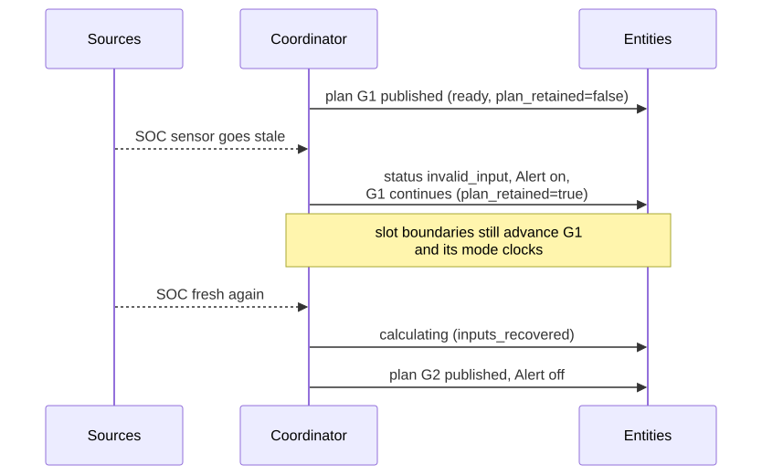
A retained plan is never extended beyond its original coverage and is not carried across an integration reload or Home Assistant restart.
Operating modes — the planned battery state
The Energy compass sensor shows the operating mode of the current interval; every row of the
plan's intervals attribute carries dispatch_mode. There are six modes. Per interval of h
hours: activity = minimum_mode_power_kw × h (default 0.1 kW) and
surplus = max(PV − load, 0).
| Mode | EN meaning | Occurs when (physical flows) | Allowed only if |
|---|---|---|---|
CHARGE_GRID |
Charge from grid | Battery charge ≥ surplus + activity — more is charged than PV surplus can supply, so the grid feeds the battery. No discharge, no curtailment. | allow_grid_charge on; price ≤ grid-charge ceiling when that limit is on. |
CHARGE_PV |
Charge from PV | activity ≤ charge ≤ surplus — only solar surplus charges. No discharge, no curtailment. | PV surplus exists. |
DISCHARGE_GRID |
Discharge with export | Discharge ≥ activity and grid export ≥ activity — the battery sells energy. | allow_battery_export on; grid export capacity > 0; Sell only PV budget and export-benefit hurdle allow it. |
SELF_CONSUME |
Self-consumption | Discharge ≥ activity, no charge, no export, no curtailment — the battery covers the house. | SOC above operating reserve. |
HOLD |
Hold | No charge, no discharge, no curtailment — the battery idles; the grid/PV cover load. | Always available. |
CURTAIL |
Curtail PV | Curtailment ≥ activity, no battery activity. | allow_curtailment on. |
When mode duration is disabled (minimum_mode_minutes = 0), the display state is derived from flows
by precedence: CURTAIL → CHARGE_GRID → CHARGE_PV → DISCHARGE_GRID → SELF_CONSUME → HOLD.
A planned LFP balance hold does not add a mode: its rows reuse CHARGE_PV or
CHARGE_GRID and carry balance_hold: true in the plan's intervals attribute.
Transitions and minimum duration
The diagram is simplified with HOLD as a hub: after its minimum duration any mode may be followed directly by any other available mode.
Rules (defaults: 60 min, 0.1 kW):
- Every newly started mode — including HOLD and CURTAIL — lasts at least
minimum_mode_minutes. Only a final passive HOLD/CURTAIL run may be clipped by coverage. The coordinator persists the accepted mode and its start; recalculation and restart preserve the clock. - PV-follow group:
CHARGE_PVandSELF_CONSUMEshare one clock — in both the inverter charges from surplus and covers a deficit from the battery, so flipping between them is not a mode change. - Any other change (source, destination, HOLD or CURTAIL) starts a new clock. Idle HOLD cannot fund an active run.
- Coverage: a new active mode needs a full duration of forecast coverage remaining.
- Safety exception (pause, not reset): during an unexpired active commitment the current row
shows HOLD when the observed SOC is already at the upper bound (charging modes —
observed_soc_maximum) or at/below the reserve (discharge modes —observed_soc_minimum), or when a carriedCHARGE_GRIDmeets a price above the ceiling before its deadline (grid_charge_price_limit). The interrupted mode and deadline stay stored; no other mode may start before that deadline. Exposed indispatch_policy.safety_exception. - Strategy change (reset): writing a new strategy drops the carried commitment for the next plan, which starts unlocked (see strategy-switch release).
- Setting
minimum_mode_minutes = 0disables duration and minimum-power rules.
Policies that gate modes
| Policy | Default | Effect |
|---|---|---|
Sell only PV (limit_export_to_pv) |
on | Per local day: exported energy ≤ PV generated (observed since midnight + forecast). Requires pv_energy_today and grid_export_energy_today counters. |
Limit grid-charging price (limit_grid_charge_price, maximum_grid_charge_price) |
off | CHARGE_GRID only at buy price ≤ ceiling for its whole minimum duration. |
Minimum export benefit (minimum_export_episode_benefit) |
1 currency unit | Each additional battery-export period must improve full-horizon cost by at least this amount. 0 disables. |
Minimum grid-charge episode benefit (minimum_grid_charge_episode_benefit) |
0 (off) | Same hurdle for new grid-charge periods; consolidates charging into fewer episodes. |
Import penalty (import_penalty_per_kwh) |
0 | Planning-only shadow price per imported kWh, under every strategy. |
Inverter standby loss (idle_drain_kw) |
0 (off) | Constant battery drain modelled per interval. |
Terminal rule (terminal_mode) |
preserve_initial |
End SOC ≥ start SOC, or value: stored energy at the end is credited at terminal_value_per_kwh. |
Consumption levels — BOOST, CHEAP, NORMAL, LIMIT
The Consumption compass answers "how attractive is using one more kWh in this interval?". For
each display interval (default 60 min over 24 h) the solver reruns with probe_kwh (default
1 kWh) of extra load. Consumption cost = (probe plan cost − base plan cost) ÷ added kWh. Because
the battery and grid are re-optimized, this is the true marginal cost — it can differ from the
tariff price (e.g. solar that would otherwise be exported costs its lost export value).
| Level | EN / PL | Condition | Typical situation |
|---|---|---|---|
BOOST |
Boost / Zwiększone zużycie | Cost strictly below boost_ceiling (default 0.01 currency/kWh). |
Free or negative energy: surplus PV that cannot be stored or exported, negative prices. Run everything you can. |
CHEAP |
Cheap / Tanio | Not BOOST, and cost ≤ cheap_percentile (default 25th) of reference costs, or ≤ the minimum purchase tariff in the reference horizon. |
Among the cheapest hours of the reference window. Good time for flexible loads. |
LIMIT |
Limit / Ograniczenie | Cost strictly above both limit_floor (default 1 currency/kWh) and the limit_percentile (default 75th). |
Expensive peak — extra use forces costly import or loses valuable export. Postpone. |
NORMAL |
Normal / Normalnie | Anything else. | Average conditions. |
| unknown | — | The probe failed or ran out of time, or the interval lies beyond forecast coverage. | Entity unavailable; later windows can still be known. |
Percentiles come from successful probe costs across the reference horizon (default 24 h) using
linear interpolation. If a full reference probe fails, short_coverage decides: absolute_fallback
(default: keep BOOST/LIMIT absolute rules and the minimum-tariff CHEAP rule) or unavailable.
Windows and flexible energy depth
Windows
Adjacent intervals of the same level merge into windows. next_boost_start, next_cheap_start
and next_limit_start show the start of the active or next window of that kind; next_change shows
the next known different level.
Attribute status |
Condition |
|---|---|
active |
Window start ≤ now < end. |
upcoming |
Window starts later within coverage. |
none_in_coverage |
No such window in the forecast; the entity is unavailable. |
start_basis is forecast, or first_observed when an already active window keeps its first
observed start across recalculations and restarts. next_change stops at unknown coverage rather
than guessing.
Flexible energy depth
Answers "how much deferrable energy can I use cheaply?". The solver independently places 3, 5, 10,
15 and 20 kWh blocks at up to flexible_load_max_power_kw (default 3 kW).
| Profile status | Condition |
|---|---|
ANCHOR |
The 3 kWh profile; its average incremental cost is the anchor price. |
STABLE |
Marginal block cost ≤ anchor + flexible_price_degradation_percent (default 15 %) of |
DEGRADED |
Marginal block cost above that threshold — stops the published depth. |
UNKNOWN |
Not solved: insufficient_time (block cannot fit at max power within the horizon), timeout, or a solver reason. Stops the depth. |
Groups: small (3/5 kWh), medium (10/15 kWh), large (20 kWh).
Dispatch strategies
select.<name>_strategy chooses which objective bundle the solver uses. Every strategy keeps all
hard physical constraints; strategies change only planning weights and a small set of
policy flags. Reported costs (expected_net_cost, consumption cost) always stay real currency —
strategy penalties never appear in them.
| Strategy | EN / PL label | Goal | Typical use |
|---|---|---|---|
cost_min |
Cost minimisation / Minimalizacja kosztów | Lowest total cost | Default, everyday |
self_sufficiency |
Self-sufficiency / Samowystarczalność | Fewest grid kWh | Flat prices, off-grid preference, zero/negative prices |
backup_ready |
Backup ready / Gotowość awaryjna | Keep a high reserve | Storm warning, planned outage, winter |
pv_swap |
PV swap / Zamiana energii PV | Buy cheap at night, sell own PV later | Small winter PV with an evening sell premium |
max_export |
Maximum export / Maksymalny eksport | Unrestricted arbitrage | High sell-price windows |
grid_friendly |
Grid friendly / Przyjazna dla sieci | Flatten import/export peaks | Capacity tariffs, weak connection |
What each strategy changes
The solver minimizes
grid = Σ ( import_weight × buy × import + import_kwh_weight × import
− export_weight × (sell − pv_export_margin) × export )
+ battery_export_penalty_per_kwh × battery_export
autonomy = soc_target_weight × Σ (deepest shortfall per window below the autonomy floor)
peak = peak_import_weight × max(import power)
caps = cap_violation_weight × Σ (import/export above soft caps)
objective = grid + wear + episode hurdles + autonomy + peak + caps − terminal credit
| Strategy | Autonomy floor | Sell only PV | Grid-charge ceiling | Export-benefit hurdle | Weights |
|---|---|---|---|---|---|
cost_min |
off | user setting | user setting | user setting | defaults (only import_penalty_per_kwh) |
self_sufficiency |
on | user setting | user setting | user setting | import_kwh_weight = max(5.0, max |buy| + 0.50, import penalty); battery-export penalty 0.20/kWh |
backup_ready |
on, floor ≥ 80 % capacity | user setting | user setting | user setting | floor weight ≥ 2.0/kWh |
pv_swap |
on | forced on | forced off | user setting | sell price reduced by margin 0.05/kWh |
max_export |
off | forced off | forced off | forced 0 | defaults |
grid_friendly |
off | user setting | user setting | user setting | peak import 0.50/kW, soft-cap violation 2.0/kWh |
"User setting" means the strategy leaves the option as configured. Forced values apply only to
options the user has not set explicitly: any strategy-owned option that deviates from its shipped
default is recorded in explicit_strategy_fields and is never overridden by a bundle.
All numbers above are defaults of Planning options:
self_sufficiency_import_price_per_kwh (5.0), self_sufficiency_export_penalty_per_kwh (0.20),
backup_target_soc_percent (80), backup_shortfall_price_per_kwh (2.0),
pv_swap_margin_per_kwh (0.05), peak_import_price_per_kw (0.50),
cap_violation_price_per_kwh (2.0), grid_friendly_import_cap_kw / _export_cap_kw (0 = site
connection limit), autonomy_margin_per_kwh (0.10).
Autonomy floor (used by self_sufficiency, backup_ready, pv_swap)
The floor asks: will the battery carry the house through the next period where load exceeds PV? The horizon is split into windows by cumulative net surplus; within each window the target is
soc_target[t] = min(usable capacity, reserve + (1 / η_discharge) × Σ deficit until window end)
The deepest shortfall below the target is billed once per window at soc_target_weight =
expected night rebuy price (median night buy price) + autonomy_margin_per_kwh. The floor looks
48 h ahead on PV/load forecasts even before tomorrow's prices are published. It is soft:
violations become autonomy_shortfall_kwh on the plan instead of an infeasible solve. It needs a PV
source (autonomy_floor_requires_pv otherwise).
LFP balance charge
LFP packs need a periodic full charge and a short hold at the top so the BMS can
balance cells and re-anchor its SOC. With Periodic LFP balance charge
(lfp_balance) on, Energy Compass tracks the last completed balance and plans
the next one. The tracker itself keeps observing SOC and advancing its state even
while lfp_balance is off; turning the setting on only starts publishing balance
windows and the diagnostic sensor.
| Setting | Default | Meaning |
|---|---|---|
balance_interval_days |
7 | Days between completed balances |
balance_hold_minutes |
60 | Minutes SOC must stay at or above the threshold |
balance_soc_threshold |
99 % | SOC that counts as full |
balance_value |
5.0 | Value of balancing on the due day |
A balance completes after SOC stays at or above the threshold for the whole
hold. A reading below the threshold restarts the hold. Only observed time
counts: an unavailable or stale SOC gives no credit, and two full readings more
than soc_max_age_seconds apart restart the hold from the later one (a hold
whose last full reading is older than that is neither holding nor complete).
Completion is evaluated lazily — while full readings keep arriving, the hold
completes on the next check without needing a state change. Phases: ok →
eligible (the earlier of 2 days or half the interval before due) → due;
holding overlays whichever phase is active while a hold is running. A hold that
starts while the balance is still ok (for example SOC back at 100 % the day
after a balance) is tracked and completes, but is not scheduled: the optimizer
gets no hold window and no miss cost for it.
The optimizer may pick one hour-aligned hold window: candidate windows start only
on the whole hour, and while due, only within the next 24 h (an eligible
balance may look anywhere across the horizon). Inside the chosen window SOC stays
at or above the threshold and the battery does not discharge. Skipping costs 10 %
of balance_value while eligible — small, so the planner normally balances only
on cheap or free energy, but it still picks a grid window that costs less than
that — balance_value × (1 + days overdue) once due, and 10 × balance_value
during a hold that is eligible or due. A window is published as CHARGE_PV
only when PV covers load in every one of its slots; otherwise (mixed PV/grid or
pure grid, such as a night window) it is CHARGE_GRID, which additionally
requires grid charging to be allowed and the grid-charge price ceiling (if any)
to pass in every slot — with balance_hold: true on every row. From the slot before the earliest candidate
window to the horizon end, the battery's energy may rise up to full capacity
instead of the configured SOC ceiling, so a hold is never blocked by
soc_ceiling below 100 %; that lift only matters when the ceiling is below
100 %. Consumption probes keep the chosen window fixed so a probe's extra load
prices the load, not the balance choice.
The Battery balance diagnostic sensor (sensor.<name>_battery_balance)
reports ok, eligible, scheduled, holding or overdue, with
last_completed, next_due, days_overdue, planned_start, planned_end,
planned_mode, hold_progress_minutes, hold_required_minutes,
threshold_percent.
cost_min — cost minimisation
- Goal: lowest forecast cost: purchases − sales + battery wear − terminal credit.
- Changes: nothing; byte-identical to the plain model when
import_penalty_per_kwh = 0. - Behaviour: charges when energy is cheap (grid or PV), discharges into expensive hours, exports only when the spread beats losses, wear and the export-benefit hurdle.
- Choose when: everyday operation; the default and the fallback of the switch blueprint.
- Watch out: it may leave the battery low before a cheap-looking night if forecasts are wrong — no autonomy reserve.
self_sufficiency — self-sufficiency
- Goal: minimize grid kWh, not currency.
- Changes: every imported kWh costs at least
max(5.0, highest |buy price| + 0.50, import_penalty_per_kwh), so import always dominates price differences; battery export costs an extra 0.20/kWh; autonomy floor on. - Behaviour: fills the battery from PV, avoids grid charging and battery export unless needed, keeps enough energy for the next deficit window.
- Choose when: day/night price spread is small (the blueprint picks it when the spread is below 0.15 PLN/kWh), when prices are zero or negative, or when independence matters more than cost.
- Watch out: reported costs stay real — this strategy can cost more money than
cost_min.
backup_ready — backup ready
- Goal: keep a large reserve for an outage.
- Changes: autonomy floor on and raised to at least
backup_target_soc_percent(80 %) of capacity; its weight is at leastbackup_shortfall_price_per_kwh(2.0/kWh). - Behaviour: refills to ~80 % and avoids discharging below it unless the shortfall is worth more than 2.0/kWh; the floor stays soft, so a plan always exists.
- Choose when: storm or grid-outage warnings, planned maintenance, cold winter nights. The
blueprint's
alertrule selects it when your alert entity is on. - Watch out: combining it with a low grid-charge ceiling raises
grid_charge_ceiling_below_autonomy_weight— the floor could be emptied but never refilled.
pv_swap — PV swap
- Goal: in low-PV seasons, buy cheap at night and sell the day's real PV output at a later, higher price.
- Changes:
pv_export_margin(0.05/kWh) is subtracted from every sell price (the export must beat the night buy by at least that margin); Sell only PV forced on (daily export ≤ daily PV); grid-charge ceiling forced off (so night charging is not blocked); autonomy floor on. - Behaviour: grid-charges overnight, lets the day's PV cover the house, then exports up to the day's generated PV in the evening peak.
- Choose when: tomorrow's PV forecast is below the daily load and
evening sell × round-trip efficiency ≥ night buy + margin(the blueprint'spv_swaprule). - Watch out: Sell only PV counts energy, not provenance — exported battery energy is limited in total to the day's PV, not traced to its origin.
max_export — maximum export
- Goal: pure arbitrage, maximize revenue from exports.
- Changes: export-benefit hurdle forced to 0, Sell only PV forced off (grid-charged energy can be resold), grid-charge ceiling forced off, autonomy floor off.
- Behaviour: charges whenever buy is low, discharges into the grid whenever the spread covers losses and wear; may do several export episodes a day.
- Choose when: exceptional sell prices, a tariff that rewards export.
- Watch out: most battery cycles; check whether your contract allows reselling grid energy. Never selected automatically.
grid_friendly — grid friendly
- Goal: flatten the grid profile — avoid high import peaks and limit export power.
- Changes: peak import term
peak_import_price_per_kw(0.50/kW of the highest import power); soft import/export capsgrid_friendly_import_cap_kw/grid_friendly_export_cap_kw(0 = site limit), each kWh above them costscap_violation_price_per_kwh(2.0); autonomy floor off. - Behaviour: spreads grid charging over longer windows, uses the battery to shave import peaks, keeps export under the cap.
- Choose when: capacity/power-based tariffs, a weak connection or a fuse near its limit.
- Watch out: caps are soft; excess is reported in
cap_violation_kwhinstead of failing. Never selected automatically.
Plan attributes for strategies
| Attribute | Meaning |
|---|---|
strategy |
Strategy that produced this plan (may lag the select while a recalculation runs). |
autonomy_shortfall_kwh |
Total shortfall below the autonomy floor; 0 = floor met. |
cap_violation_kwh |
Total energy above grid_friendly soft caps; 0 = caps met. |
Strategy-switch release
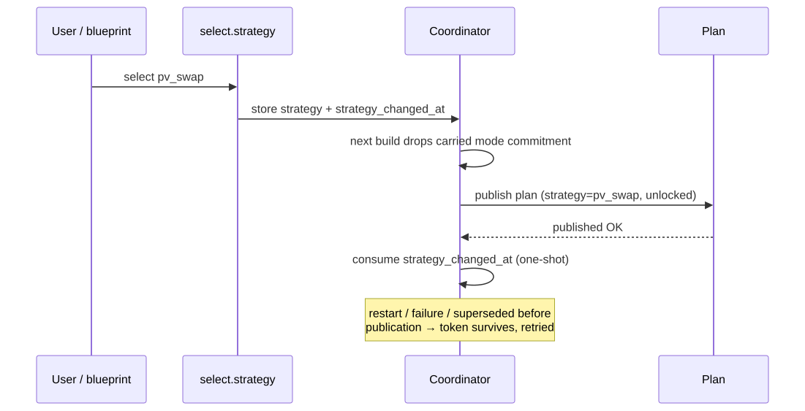
A strategy change is a reset: the carried mode commitment is released so the new strategy is not trapped in the old mode's minimum duration. A current export episode is kept so its hurdle is not charged twice.
Automatic strategy switching
The optional blueprint strategy_switch.yaml
picks one strategy per day. It runs at 14:05 (after RCE next-day prices and Solcast), retries
hourly until 20:00 if next-day prices are missing, and reconciles a half-applied write at Home
Assistant start.
| Input | Default |
|---|---|
| Night window | 22:00–06:00 (lowest buy price in plan intervals) |
| Max buy | highest buy price across all plan intervals |
| Evening window | 17:00–21:00 (max sell price from RCE next day) |
| Round-trip efficiency | 0.90 |
| Self-sufficiency spread margin | 0.15 PLN/kWh |
| PV swap margin | 0.05 PLN/kWh |
| Enabled rules | alert, pv_swap, self_sufficiency (cost_min is the fallback) |
A manual change of the select blocks the economic rules until the next successful scheduled
run; the alert rule is never blocked. max_export and grid_friendly are manual-only. Setup
details: installation guide.
Window notifications
The optional blueprint notifications.yaml
tells the household when extra use is cheap (favorable window) or when an expensive LIMIT window
is starting. Energy Compass itself never sends anything; Notify enabled in the integration
options is the master switch. Setup: installation guide.
| Message | When |
|---|---|
| Use the cheap energy / Wykorzystaj tanią energię | a favorable window is running and the whole rest of it is BOOST |
| A good time for household appliances / Dobry moment na domowe urządzenia | a favorable window is running, not all BOOST |
| Plan heavy use for later / Zaplanuj większe zużycie na później | a LIMIT window starts within the lead time, or is already running |
The message names the window's local times and suggests moving laundry, the dishwasher or car
charging. The action receives notification_title, notification_message and event_kind.
| Input | Meaning |
|---|---|
compass, plan, forecast_valid, alert, optimizer_status |
Consumption compass, Plan, Forecast valid, Alert and Optimizer status of one installation |
next_boost, next_cheap, next_limit |
the three window start sensors (their changes re-run the automation) |
last_favorable, last_limit |
Text helpers (max 255) holding the last window as {"s": start, "e": end} |
daily_count, daily_date, last_sent |
Number helper and two Date/time helpers for the daily cap and cooldown |
language |
en or pl for the title and message |
use_blueprint_overrides |
off: use the integration's notification preferences; on: use the inputs below |
enabled_events, minimum_hours, limit_lead_minutes, quiet_start, quiet_end, cooldown_minutes, daily_cap |
overrides: events, minimum favorable time remaining, LIMIT lead, quiet hours, cooldown, messages per local day |
notification_actions |
the action to run, for example a mobile app notify action |
Deye inverter controller (Solarman)
Energy Compass itself never writes to an inverter. The optional blueprint
deye_solarman_controller.yaml
does: it executes the plan on a Deye hybrid inverter through the
Solarman integration, writing three battery currents and
the six time-of-use (TOU) programs, and reads every write back from the holding registers. It needs the
companion package energy_compass_deye.yaml. Setup steps are in
the installation guide. Both files are generated by
tools/deye_controller/build.py; edit the generator, not the YAML.
Package entities
| Entity | Role |
|---|---|
input_select.energy_compass_deye_mode |
Off / Simulation / Auto; the only switch you operate |
input_boolean.energy_compass_deye_session |
on once a control session has started (Home Assistant start or first run) |
input_datetime.energy_compass_deye_session_start |
session start; only plans generated after it are accepted |
input_boolean.energy_compass_deye_restore_pending |
on from the first write until the base profile is confirmed again |
sensor.energy_compass_deye_plan |
the accepted plan snapshot (attribute snapshot) |
sensor.energy_compass_deye_runtime |
runtime code (below); attribute runtime holds state, reason, confirmed values and uncertain registers |
sensor.energy_compass_deye_tou_settings |
the TOU program prefix (attribute prefix) and current program values; a change re-runs the controller |
sensor.energy_compass_deye_next_tou |
next local TOU program boundary |
sensor.energy_compass_deye_deadline |
valid_until of the accepted plan |
sensor.energy_compass_deye_interval_end |
end of the current plan interval |
The package assumes Solarman's default TOU entity names (number.inverter_deye_program_1_power …
time.inverter_deye_program_6_time). For another device name, generate the package with your prefix in
the YAML builder or with python tools/deye_controller/build.py --prefix my_inverter_program_.
Modes
Auto writes; Simulation computes every target and records it in runtime without touching the
inverter; Off releases control. Leaving Auto for Off restores the base profile once, confirms it,
then leaves later manual settings alone. Disabling the automation skips that restore. A switch to
Simulation while a restore is pending is refused: the mode goes to Off, the base profile is restored,
and Simulation can then be chosen again.
Plan acceptance
A plan is accepted only when all of these hold: it was generated after the session start and after the
last revocation, it is newer than the cached plan, Forecast valid is on, Alert is off, the optimizer
is ready (or calculating while retaining a complete plan), the plan, optimizer and forecast report
the same generated_at, its intervals are contiguous and cover now, and valid_until is in the future.
An optimizer outside ready/calculating or an Alert other than off revokes the cached plan; plans
generated before that revocation are never accepted. After a Home Assistant restart the controller
therefore stays on the base profile until the next calculation publishes.
Control also requires fresh telemetry: every entity in telemetry_entities numeric and reported within
30 s, battery voltage 400–610 V and SOC 0–100 %. Every automation in old_writers must be off and not
running.
Profiles
| Plan state | Charge / discharge current | Grid charge current | TOU direction, target |
|---|---|---|---|
CHARGE_PV, SELF_CONSUME |
cap / cap | 0 A | all Disabled, SOC 10 % |
CHARGE_GRID |
cap / 0 A | planned grid share, ≤ max_grid_current |
Grid on the active program, target SOC from the plan |
DISCHARGE_GRID |
0 A / planned, ≤ cap | 0 A | Sell on the active program, target SOC from the plan, power = planned, ≤ max_power_w |
HOLD, CURTAIL |
hold_grid_current / 0 A |
hold_grid_current |
Grid, target SOC = planned end SOC rounded down |
| base (release, invalid plan) | relinquish_current / relinquish_current |
0 A | all Disabled, SOC 10 %, 49.6 (496 V), power max_power_w |
The cap is min(max_current, max_power_w / V) for charging and min(max_current, max_power_w × eta / V)
for discharging; at 100 % SOC the charge current becomes 0 A. Planned currents convert interval kWh with
eta over the full interval. Target SOC uses capacity_kwh; target voltage follows a fixed
high-voltage LFP curve (496–536 V for 10–90 %, 584 V charging or 544 V discharging at 100 %). A reached
target in CHARGE_GRID/DISCHARGE_GRID is latched for that plan interval. In an LFP balance row
(balance_hold: true) the charge current stays on at 100 %, CHARGE_GRID targets 100 % and the grid
current is at least balance_grid_current. CURTAIL runs the HOLD profile with a warning, because the
controller cannot limit PV.
Only battery modes listed in commissioned_battery_modes are controlled; any other mode (for example
Voltage before its thresholds were proven) keeps the base profile. With Voltage allowed, a target
outside 495–560 V is refused.
Writes and confirmation
Each change writes one entity through number.set_value or select.select_option, then reads holding
registers 108–177 from solarman_device and compares the raw value. A register that does not confirm
is listed in runtime.uncertain and retried; a direction or target change first zeroes the currents,
then sets thresholds, then enables the direction.
| Runtime code | Meaning |
|---|---|
waiting |
the first run has not published a code yet |
ok |
the planned profile is computed (Simulation) or written and confirmed (Auto) |
blocked |
no valid plan or a gate failed; runtime.reason says which |
restored |
the base profile was written and confirmed (release in Off, or no valid plan in Auto) |
verification_required |
writes finished but not every register confirmed |
write_failed |
a register did not confirm after retries; restore stays pending |
simulation_blocked |
Simulation was refused while a restore was pending |
runtime.reason texts are in Polish in this release.
Inputs
| Input | Default | Meaning |
|---|---|---|
plan_entity, optimizer_entity, valid_entity, alert_entity, compass_entity |
— | Plan, Optimizer status, Forecast valid, Alert and Consumption compass of one Energy Compass installation |
solarman_device |
— | Solarman inverter device for register read-back |
charge_entity, discharge_entity, grid_entity |
— | battery max charging (108), max discharging (109) and grid charging (128) current |
operation_entity |
— | battery operation mode select (Capacity / Voltage) |
soc_entity, voltage_entity |
— | battery SOC (%) and pack voltage (V) |
telemetry_entities |
— | sensors that must be fresh (reported within 30 s) |
capacity_kwh |
25 kWh | capacity used by the Energy Compass plan |
max_power_w |
8000 W | battery power cap and TOU program power |
max_current |
18 A | charge/discharge current cap in forced states |
max_grid_current |
16 A | grid charging current cap |
hold_grid_current |
1 A | charge and grid current in HOLD |
balance_grid_current |
2 A | minimum grid current in an LFP balance row |
relinquish_current |
18 A | charge/discharge current of the base profile |
eta |
0.9747 | one-way battery efficiency |
commissioned_battery_modes |
Capacity | battery modes allowed for physical control |
old_writers |
none | automations that must be off before any write |
Dashboard examples
Generated by tools/dashboards/build.py with placeholder entity IDs:
| Section | What it shows |
|---|---|
controller_panel.yaml |
the controller at a glance: a Check control warning (stale forecast, Alert, runtime not ok, no fresh confirmation, unconfirmed writes), battery now with the mode selector and confirmed settings, the Compass decision with the controller's SOC target, the next 24 h of plan states with end SOC, a SOC forecast chart, the household consumption hint and cost, and 24 h history of SOC, power and control |
controller_diagnostics.yaml |
optimizer and controller state, reason, confirmed mode, last confirmation, plan and forecast validity, active TOU program, unconfirmed writes, session and restore flags, and the read-back of the three current limits |
plan_chart.yaml |
12 h of measured load, grid, PV and SoC with the next 24 h of the plan over plan-state bands |
consumer_compass_chart.yaml |
Consumer Compass levels, 4 h history and 20 h forecast |
The panel uses native cards plus ApexCharts Card for its SOC forecast; the two charts need ApexCharts Card. The YAML builder fills any of them with your entity IDs, capacity and language. See the installation guide.
Reason code reference
Coverage / quality reasons (reason, reasons attributes)
| Code | Meaning |
|---|---|
complete |
Full reference coverage, all probes succeeded. |
available_reference_horizon |
Source coverage shorter than the requested reference horizon; percentiles use what exists. |
reference_horizon_uncovered |
Reserved in translations; not emitted by 0.1.25. |
reference_probe_failed |
At least one reference probe failed or timed out. |
short_source_coverage |
Price/forecast coverage ends before the requested planning horizon. |
current_guidance_unavailable |
Current interval probe unknown; later windows may still be valid. |
missing_forecast_continuation |
A configured source has not yet published data for part of the requested horizon (e.g. tomorrow's prices before ~14:00). |
load_history_fallback |
Part of the load forecast uses the fallback daily load because history is insufficient. |
unvalidated_tariff |
Tariff calibration marked unvalidated. |
unvalidated_capacity |
Battery capacity calibration marked unvalidated. |
Autonomy warnings
| Code | Meaning |
|---|---|
autonomy_floor_requires_pv |
No PV source — floor skipped. |
autonomy_tail_coarsened |
48 h tail longer than 192 intervals, coarsened to hourly. |
autonomy_tail_unavailable |
Tail source failed; floor uses the priced horizon only. |
grid_charge_ceiling_below_autonomy_weight |
Grid-charge ceiling below floor weight − margin; floor could never be refilled. |
Safety exceptions (dispatch_policy.safety_exception.reason)
| Code | Meaning |
|---|---|
observed_soc_maximum |
Charging commitment active but SOC already at the maximum. |
observed_soc_minimum |
Discharge commitment active but SOC at or below the reserve. |
grid_charge_price_limit |
Carried CHARGE_GRID would continue above the grid-charge price ceiling. |
Balance warnings
These are raw codes, not translated.
| Code | Meaning |
|---|---|
balance_overdue |
The balance phase is due but no hold window could be fit into the plan; a balance was missed this horizon. |
balance_no_window_in_horizon |
The balance phase is eligible or due but no candidate hold window exists in the horizon at all (no aligned start satisfies PV/grid-charge feasibility). |